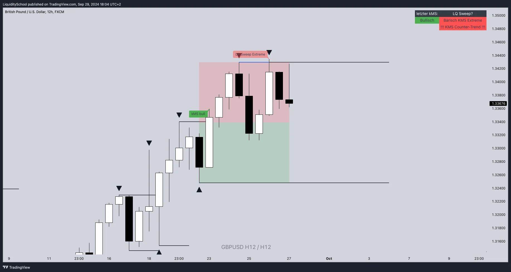

PROJEKTE & INDIKATOREN
Projektpartner
Einige Projekte wurden gemeinsam für eine Community entwickelt:

Liquidity School Pro
Marktstruktur, Smart Money Konzepte und das HXHY-System.
Details ansehenTwintraders
Sessionalitäten für einen statistischen Vorteil im Markt!
Details ansehenAlphamonics
Harmonische Muster und Smart Money Konzepte.
Details ansehenPrime Trading
Volumenprofilen und Psychologischen Level.
Details ansehenOptionen lernen
Mulit-Asset Analyse mit verschiedenen Indikatoren für den Optionshandel.
Details ansehenDER NÄCHSTE SCHRITT
Aus deiner Idee wird dein Programm.
Erzähl mir, wie du tradest. Ich helfe dir, deine Regeln in Code zu übersetzen und programmiere das für dich!
Reviews:
★★★★★ "Ich habe großartige Erfahrungen mit Michi gemacht! Er kann in kurzer Zeit individuelle TradingView-Indikatoren erstellten, die perfekt auf bestimmte Bedürfnisse abgestimmt sind. Die Zusammenarbeit mit ihm ist professionell, effizient und äußerst angenehm. Man merkt, dass er mit Leidenschaft dabei. Absolut empfehlenswert für alle, die nach maßgeschneiderten Lösungen suchen!"
g.co/kgs/Ug81ZA2
★★★★★ "Ein sehr kompetenter Programmierer, der mein Trading-Leben erheblich erleichtert hat. Für einen sehr niedrigen Preis erhält man ein Meisterwerk. Ich bin sehr zufrieden mit seiner Arbeit."
g.co/kgs/3m2eBC6
★★★★★ "Hallo, Ich finde den Indikator den Michi programmiert hat echt klasse. Er hilft mir bei meiner täglichen Analyse der Charts und hilft mein passendes Setup zu finden. Kann ich nur weiterempfehlen. 👍🏻👍🏻👍🏻"
g.co/kgs/mjNq5RA